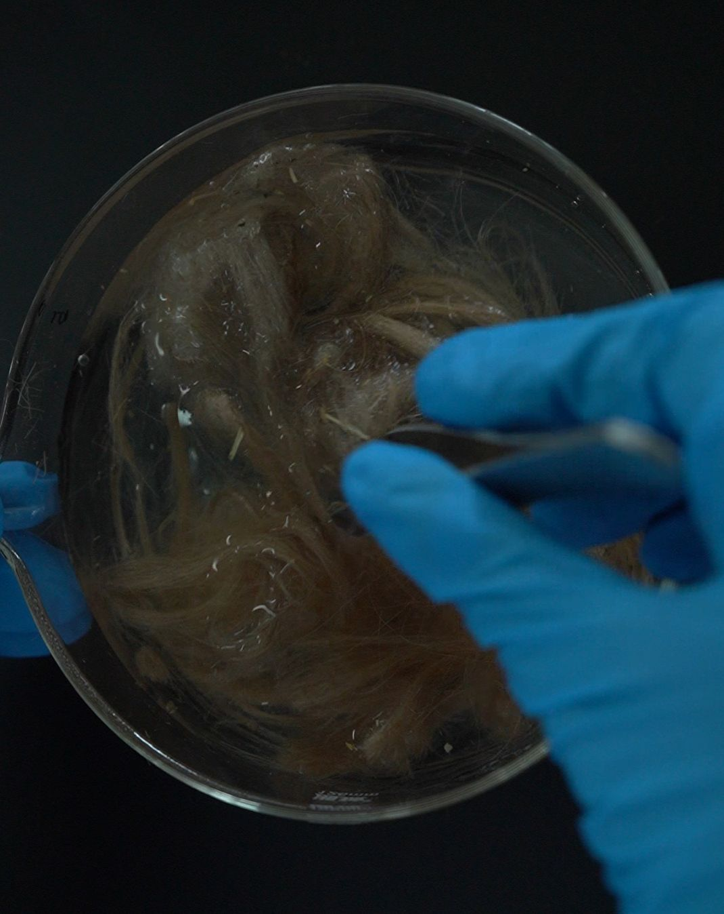
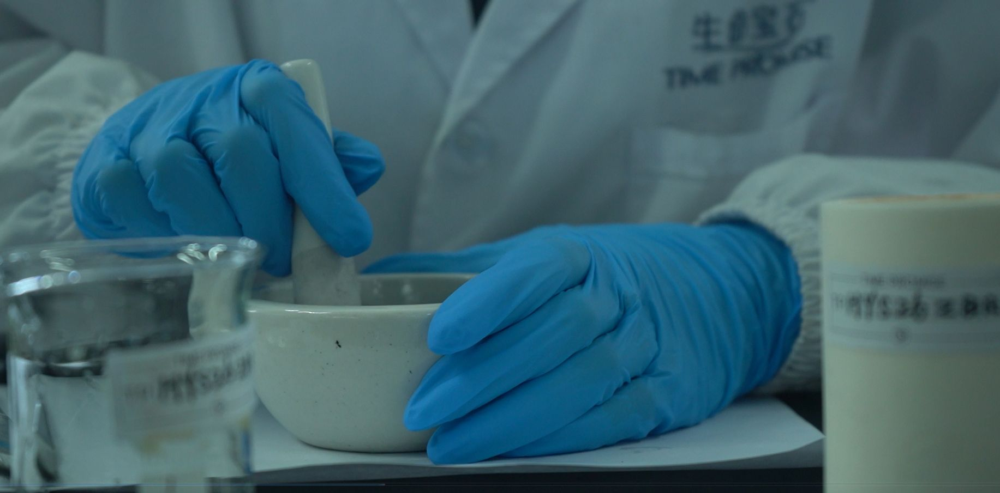
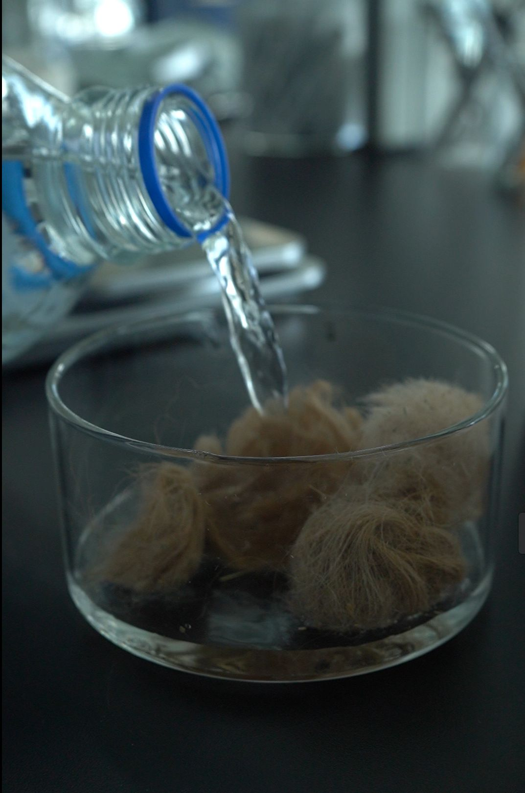
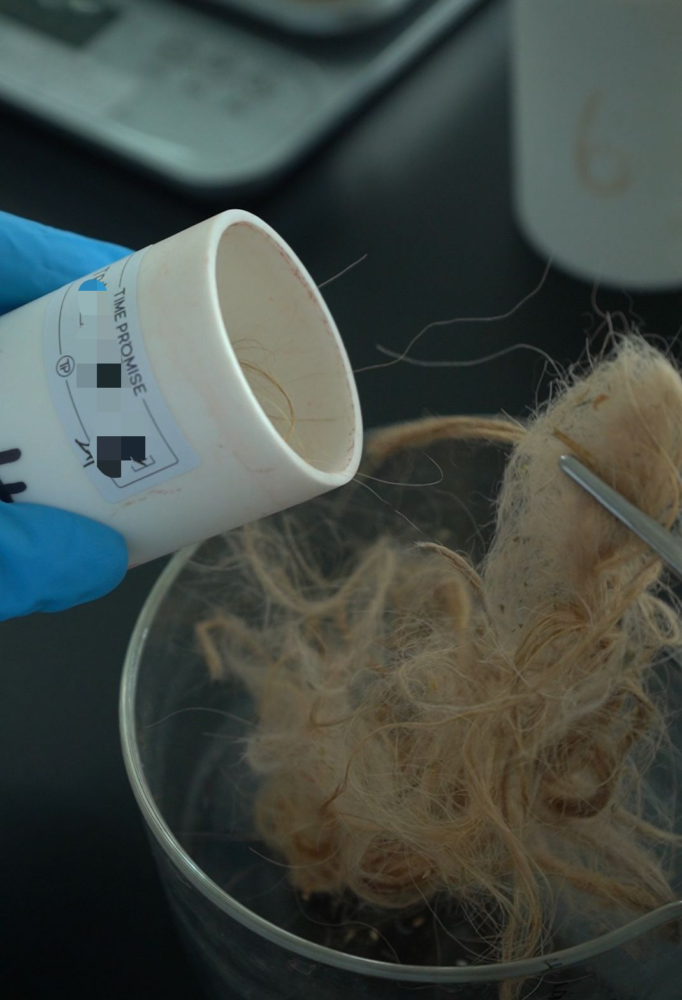
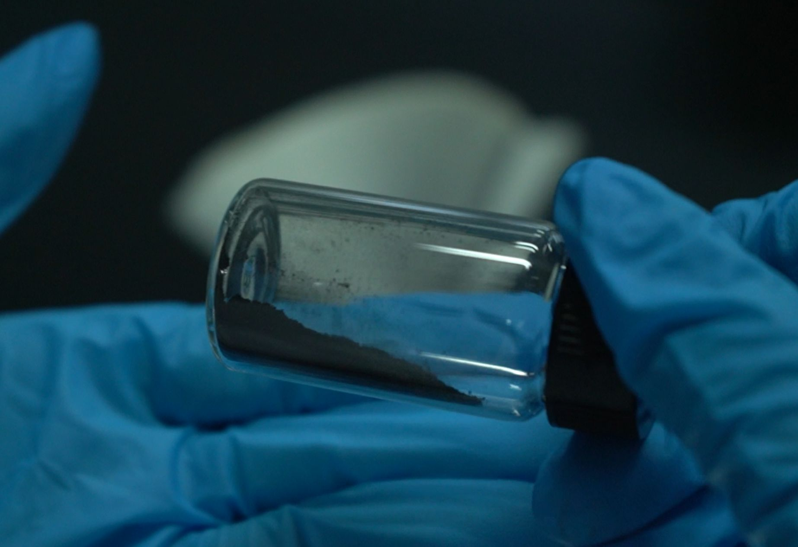
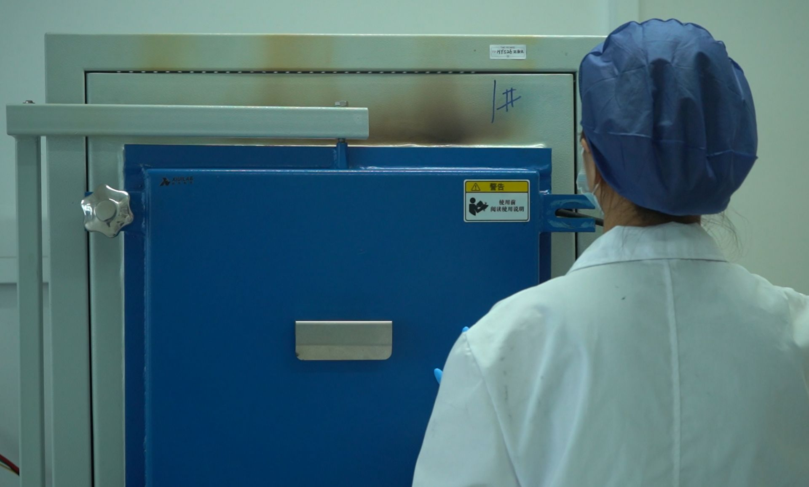

Interested in animal fiber memorial diamonds? Explore white-label partnership opportunities.
Case Study · Cultural Heritage · Inner Mongolia
A cultural preservation project converting Inner Mongolian camel wool into commemorative diamonds. Each stone represents a family's pastoral heritage and connection to the land — proven through specialized keratin purification protocols.
≥99.5%
Carbon Purity Achieved
0.5–1.2
Diamond Size (ct)
68
Timeline (Days)
1,200g
Camel Wool Carbon
CCIC
CCIC Certified
China
Country
Animal fiber — particularly camel wool — contains high concentrations of keratin, a fibrous structural protein that resists standard carbon extraction methods. Traditional botanical extraction protocols failed to achieve the purity threshold needed for HPHT synthesis.
The project required developing a specialized purification sequence that could break down keratin matrices without losing the carbon content trapped within the fiber structure. This was uncharted territory for memorial diamond manufacturing.
BioGem Lab's R&D team developed a multi-stage fiber purification protocol: enzymatic keratin breakdown, acid-wash carbon isolation, thermal decomposition at variable temperatures, and spectroscopic purity verification at each checkpoint.
The result was ≥99.5% carbon purity from camel wool — a first for animal fiber memorial diamonds. The protocol was then documented as a proprietary process addendum to our 2012 national patent.
The Camel Wool Diamond project proved that any animal fiber — wool, fur, hair, or feather — can be purified to gem-quality carbon standards. This opened entirely new markets for partners serving pastoral communities, animal lovers, and cultural heritage organisations.
Each diamond was delivered in custom Mongolian-themed packaging featuring traditional knot motifs, connecting the finished gem to its nomadic heritage.
Seven-stage pipeline with specialized keratin breakdown for animal fiber carbon sources.
Carbon Collection
Camel wool from herder families
Carbon Extraction
Enzymatic keratin breakdown
Purification
Multi-stage to ≥99.5% purity
HPHT Growth
5.5 GPa, 1,450°C synthesis
Cutting
Precision polished to spec
Certification
4C grading + traceability
Delivery
Mongolian-themed packaging
Process images from the Camel Wool Diamond production — fiber preparation, grinding, extraction, and HPHT synthesis.

Wool Sample
Raw camel wool before processing

Fiber Grinding
Breaking down wool fibers for extraction

Extraction Pouring
Isolating carbon from keratin matrix

Sample Transfer
Moving between purification stages

Purified Carbon
Final graphite powder ready for HPHT

HPHT Synthesis
Crystal growth at 5.5 GPa, 1,450°C
"Our grandparents herded camels across the grasslands for generations. Now their wool lives on as diamonds. The traditional knot packaging was a beautiful touch — our customers wept when they opened the box."
Partner Representative
Cultural Heritage Project, Inner Mongolia · OEM Client
Yes. The Camel Wool Diamond project proved that any animal fiber — wool, fur, hair, or feather — can be purified to gem-quality carbon standards. Each fiber type requires a tailored extraction protocol, but all are technically viable. We have successfully processed camel wool, horse hair, dog fur, cat hair, and human hair.
Keratin is a fibrous structural protein that forms the protective outer layer of hair, wool, and feathers. It is chemically resistant to standard decomposition methods. Breaking it down requires enzymatic treatment or specialized thermal protocols that don't destroy the carbon content trapped within the fiber matrix. BioGem Lab's patented process achieves this while preserving ≥99.5% carbon purity.
This varies by fiber type and density. Clean, dry wool or fur typically requires 12g for a 1-carat diamond. BioGem Lab evaluates each sample before production and provides a carbon yield estimate. We recommend sending at least 10g of clean, dry material to ensure sufficient yield.
Absolutely. The Camel Wool Diamond project featured custom Mongolian-themed packaging with traditional knot motifs. We can design packaging that reflects any cultural heritage, regional identity, or partner brand aesthetic. This includes color schemes, material choices, and decorative elements.
From camel wool to horse hair to pet fur — any animal fiber can become a memorial diamond. Let's discuss how animal fiber fits your brand.